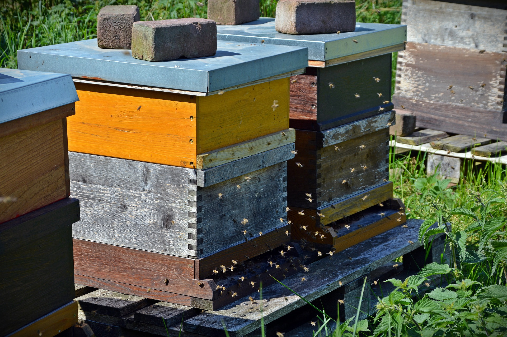

Beehive
Reguirements for your roof
For your own safety and the safety of the bees, we have some requirements for your roof.
Our beekeepers will regularly check on your bees to make sure they are healthy. Therefore, your roof needs to be easily accessible for them. Your roof of course needs to be flat it also needs to be stable and strong enough, to make sure that it will be safe for both you and your bees. Be sure that there is plants in a 3 km radius. This is about the length a honey bee would fly for pollen.
We encourage you to think about your neighbors and who you bees may affect. If you think your bees may affect your neighbors, be sure that knows about it and is fine with it.


What are the bees doing during the winter?
Even though many insects die during the winter, honeybees survive, and they don’t even hibernate. All the workers cling together with their queen in the middle to stay warm. The bees are rotating on staying on the outside, just like the penguins! For the outer bees it can get quite cold and they nearly cannot move, but for the queen and the other inner bees the temperature stays up till 35 °C.
Our beehives are well isolated for winter to make it easier for the bees. And our beekeepers will keep an extra eye on your bees and to look after them. We will check on your bees every two weeks, to take the temperature and feed them to keep them strong.